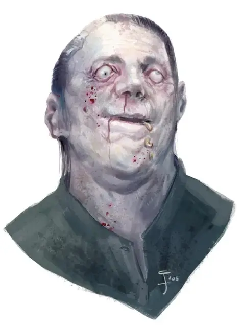

Мистер Дори
Mr. Dory
Средняя Аберрация, хаотично-злая, именной НИП

Класс Доспеха 18 (проклёпанный доспех, щит)
Хиты 170 (20к8 + 80)
Скорость 30 футов
| мод | спас | ||
|---|---|---|---|
| СИЛ | 13 | +1 | +1 |
| ЛОВ | 20 | +5 | +5 |
| ТЕЛ | 19 | +4 | +8 |
| мод | спас | ||
|---|---|---|---|
| ИНТ | 14 | +2 | +2 |
| МДР | 14 | +2 | +6 |
| ХАР | 16 | +3 | +3 |
Навыки Атлетика +5, Восприятие +6, Скрытность +9
Иммунитет к урону некротическая энергия
Чувства тёмное зрение 60 футов, пассивное Восприятие 16
Языки Общий, Бездны, Глубинная речь, Телепатия 60 фт.
Опасность 10 (5900 опыта)
Бонус мастерства +4
Особенности
Зависимость от воды. Мистер Дори получает 6 (1к12) урона кислотой за каждые 10 минут, которые он проводит без воздействия воды.
Сопротивление магии. Мистер Дори совершает с преимуществом спасброски от заклинаний и прочих магических эффектов.
Врождённое колдовство. Базовой характеристикой Мистера Дори является Харизма (Сл спасброска от заклинания 15, +7 к попаданию атаками заклинаниями). Он может накладывать следующие заклинания, не нуждаясь в материальных компонентах:
• Неограниченно: обнаружение магии [detect magic], обнаружение мыслей [detect thoughts], невидимость [invisibility] (только на себя);
• 2/день каждое: ужас [fear], огненный шар [fireball], полёт [fly];
• 1/день каждое: облако смерти [cloudkill], эфирность [etherealness].
Действия
Мультиатака. Мистер Дори совершает три атаки Рапирой.
Рапира. . Рукопашная атака оружием: +9 к попаданию, досягаемость 5 футов, одна цель. Попадание: 9 (1к8 + 5) колющего урона и 7 (2к6) урона некротической энергией.
Глаз разложения (Перезарядка 5-6). Мистер Дори пристально смотрит на существо, которое он видит в пределах 30 футов. Цель должна совершить спасбросок Телосложения Сл 15. При провале оно получает 27 (5к10) урона некротической энергией и 27 (5к10) урона ядом, после чего становится уязвимым урону ядом и некротической энергией на протяжении 1 минуты. При успехе оно получает половину этого урона и не становится уязвимым урону.
Описание
Один из четырех советников, которые правят Стайзом, мистер Дори скрывает свою проклятую натуру у всех на виду. Его редкое, восприимчивое к жидкости "кожное заболевание" на самом деле является формой того же недуга аболета, который создал скамов, хотя состояние Дори не такое тяжелое, и ему удалось сохранить свободу воли.